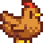

index.html 彩蛋层忠实镜像 · 无需起服务即可预览 · 真机在「设置 → 关于」仅保留 Apple 六色彩虹发丝线 + 声明致敬（Python/Linux/Acknowledgements/Open Source 致敬仅计划文档设计，未落 UI）；诗卡/星露谷棕鸡/1984「Hello.」仅本 demo 预览
古中文 / 古日语竖向书写、并做现代观感的断句。万葉集原无标点，按语意断成「一句一列」；王维《竹里馆》、李白《听蜀僧濬弹琴》按联分列。竖排用 writing-mode:vertical-rl，第一列在右、向左推进。
英文诗保持横排；另有「非诗标签池」以较小概率替换加载位（短↔短，不动任何逻辑类文字）。
Originally designed by Homo sapiens
assembled and implemented by Silicon-based life
¡Viva la vida y la cooperación entre especies!

真机中：展开「换肤 → 叠层效果 → 高级（工程对照）」折叠时，有 1% 概率弹出 Apple「Hello.」。下方两种模拟：① 直接触发；② 模拟「高级折叠展开」的一次掷骰（按 1% 概率，可连点观察）。点按覆盖层或按 Esc 关闭。矢量优先加载 webapi/static/eggs/hello/<lang>.svg（SF-Hello），缺失时显示内联占位。
verify_eggs.py A–I（实际 UI 守卫 A–H + demo 镜像守卫 I）全过（当前 77/0）。